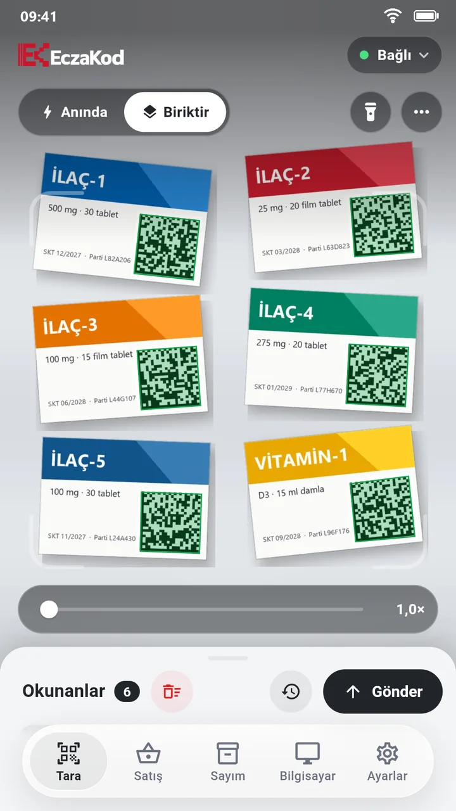

Eczane barkod okuyucu, telefonunuzda
EczaKod eczanedeki telefonu karekod ve barkod okuyucuya çevirir. Bir karede birden çok kutu okunur; kodlar Wi-Fi üzerinden eczane programınızın satış ekranına, el tipi barkod okuyucu gibi yazılır. Ek cihaz, kablo ya da alıcı gerekmez.
Eczane programınız onu barkod okuyucu sanır
El tipi barkod okuyucular bilgisayara klavye gibi yazar. EczaKod da öyle yapar: telefonun okuduğu karekodlar bilgisayardaki küçük program aracılığıyla imlecin olduğu yere yazılır. Bu yüzden programınızda bir değişiklik ya da entegrasyon gerekmez.
Satış ekranında okuyucuyla karekod girebiliyorsanız EczaKod'la da girebilirsiniz. Kodlar arası bekleme ve ayraç, kurulumda programınıza göre bir kez ayarlanır.
| El tipi barkod okuyucu | EczaKod | |
|---|---|---|
| Okuma | Kutu kutu, tetiğe basarak | Bir karede 20 kutuya kadar, her kutu bir kez |
| Fiyat | Göstermez | Öneri satış fiyatı, ürün tipi ve KDV telefonda |
| Miad | Fark etmez | Miadı geçmiş kutuda kırmızı uyarı ve uyarı sesi |
| Stok sayımı | Ayrı cihaz ya da ayrı uygulama | Aynı uygulamada, miad dağılımıyla |
| Bağlantı | Kablo ya da kısa menzilli alıcı | Eczanenin Wi-Fi'ı; depoda da, kasada da |
| Donanım | Her tezgâha ayrı okuyucu | Eczanedeki telefonlar yeter |
Kasada nasıl kullanılır?
- Satış ekranını açın Eczane programında satış ekranını açın, imleç karekod alanında olsun.
- Kutuları kameraya gösterin Reçetedeki kutuları tezgâha yan yana koyun. Okunan her kutu yeşil çerçeveyle işaretlenir ve listeye bir kez girer.
- Gönder'e basın Kodlar sırayla satış ekranına yazılır. İsterseniz Anında moduna geçin; okunan kod klasik el okuyucusu gibi hemen yazılır.

Karekod da, çizgi barkod da
İlaç kutularındaki karekodun yanında dermokozmetik ve takviye gibi yalnız çizgi barkodlu ürünler de okunur.
- Karekoddan gelen bilgi: ürün adı, son kullanma tarihi, parti ve seri numarası okuma anında telefonda görünür.
- Fiyat: okutulan ürünün öneri satış fiyatı, ürün tipi ve KDV oranı görünür; sepet toplamı kendiliğinden hesaplanır.
- Miad uyarısı: miadı geçmiş kutu kırmızıyla işaretlenir ve siz onaylamadan programa gitmez.
- Zor karekodlar: küçük, eğik ya da siyah zemine basılmış karekodlar için yakınlaştırma, fener ve ters renk okuma vardır.
- Güvenli yazma: gönderim sırasında başka bir pencere öne gelirse EczaKod yazmayı durdurur; yanlış yere tek karakter yazmaz.
Neler gerekiyor?
- Bilgisayar: eczane programının çalıştığı Windows 10 ya da 11 bilgisayar. Bilgisayar programı ücretsizdir.
- Telefon: arka kamerası olan güncel bir Android telefon ya da iPhone.
- Ağ: telefon ve bilgisayar aynı Wi-Fi ağında. Okuma ve gönderim için internet gerekmez.
Kurulum yaklaşık on dakika sürer ve bir kez yapılır: kurulum ve kullanım rehberi.
Sık sorulanlar
El tipi barkod okuyucumu çıkarmam gerekir mi?
Hangi eczane programlarıyla çalışır?
İTS bildirimini EczaKod mu yapıyor?
Birden çok tezgâhta kullanılabilir mi?
Ücreti ne kadar?
Ücretsiz deneyin
Bilgisayar programı her zaman en güncel sürümle iner. Kurulum yaklaşık iki dakika sürer.
Windows için indirTelefon uygulaması App Store ve Google Play'de: ilk ay ücretsiz deneyin.
Stok sayımı için de aynı uygulama kullanılır: eczane stok sayımı.